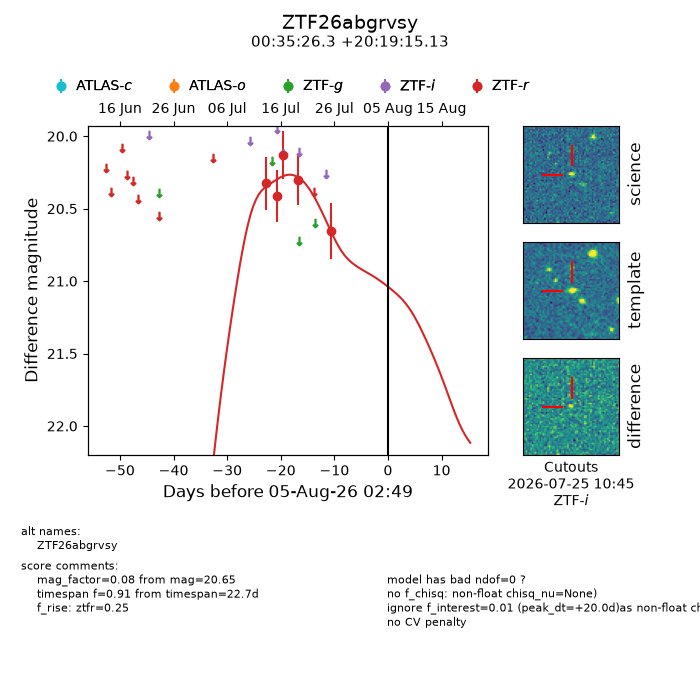
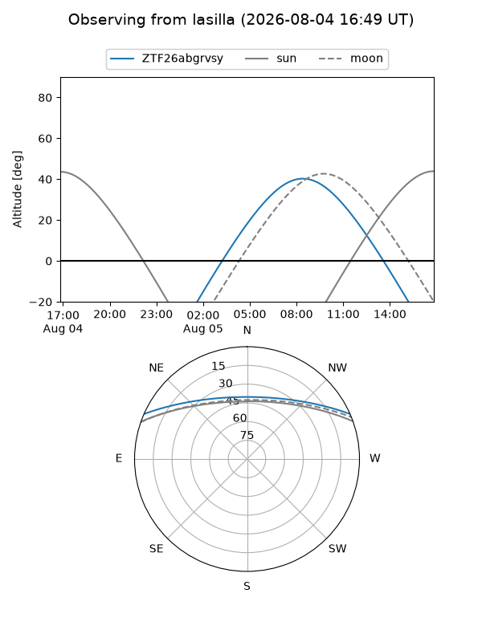
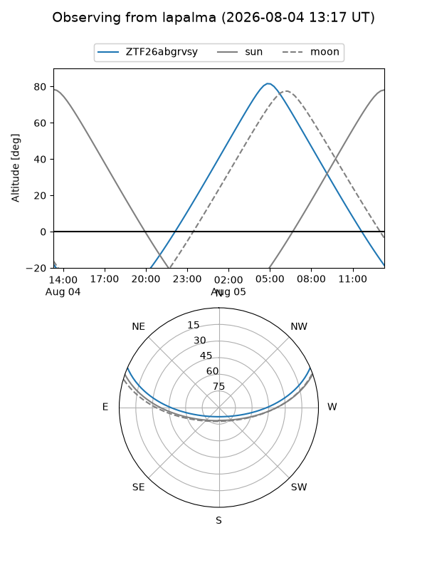
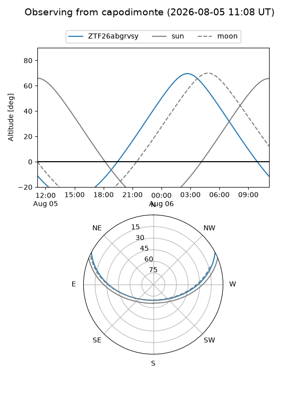
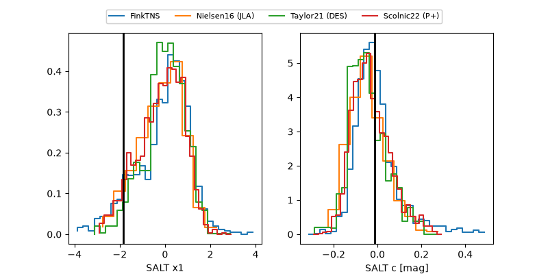

ZTF26abgrvsy
Target ZTF26abgrvsy at 2026-08-05 14:03
Aliases and brokers:
FINK-ZTF: ztf.fink-portal.org/ZTF26abgrvsy
Lasair-ZTF: lasair-ztf.lsst.ac.uk/objects/ZTF26abgrvsy
ALeRCE-ZTF: alerce.online/object/ZTF26abgrvsy
Direct TNS query: direct search
alt names
ZTF26abgrvsy (ztf,fink_ztf)
Coordinates:
equatorial (ra, dec) = 8.8597,+20.32087
equatorial (HMS+DMS) = 00:35:26.33,+20:19:15.13
galactic (l, b) = (117.8507,-42.39298)
Flags:
peak dt: +20.5
Photometry:
last ztfr=20.65
5 ztfr detections
Lightcurve

Visibility



Additional plots
